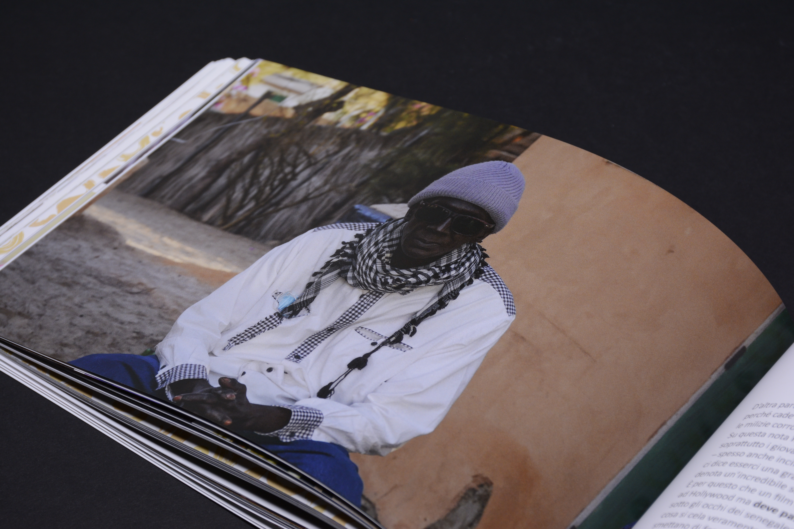
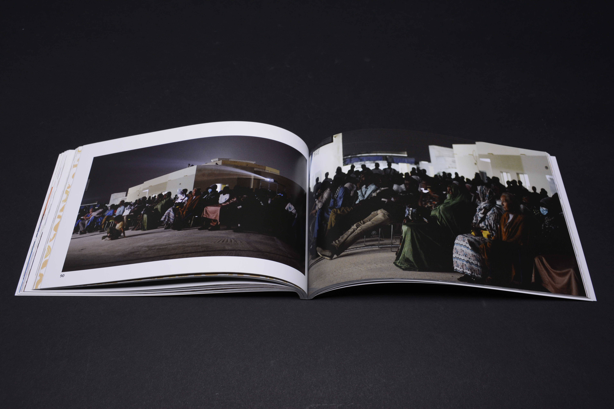
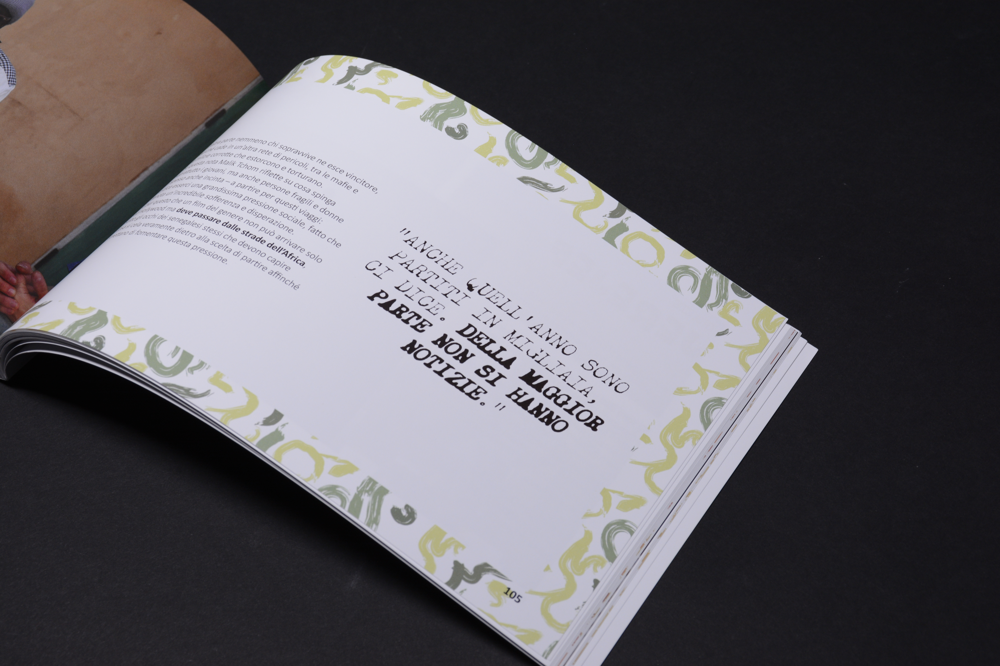
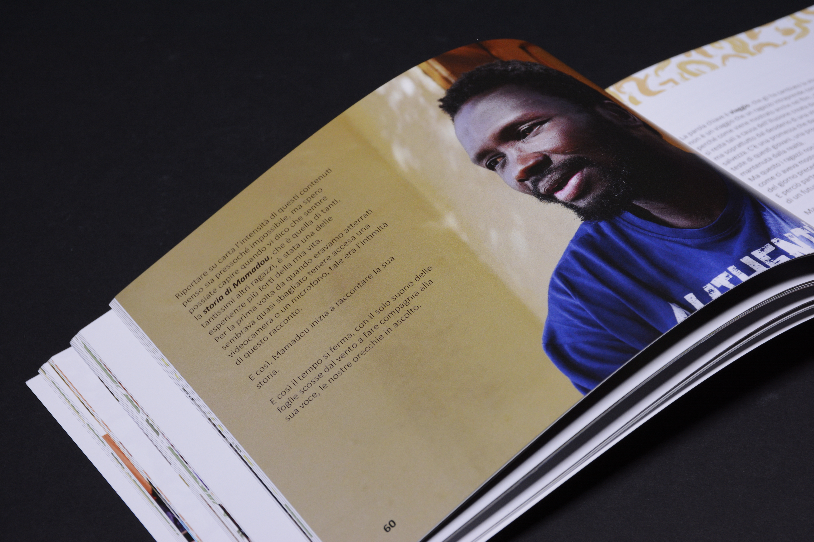
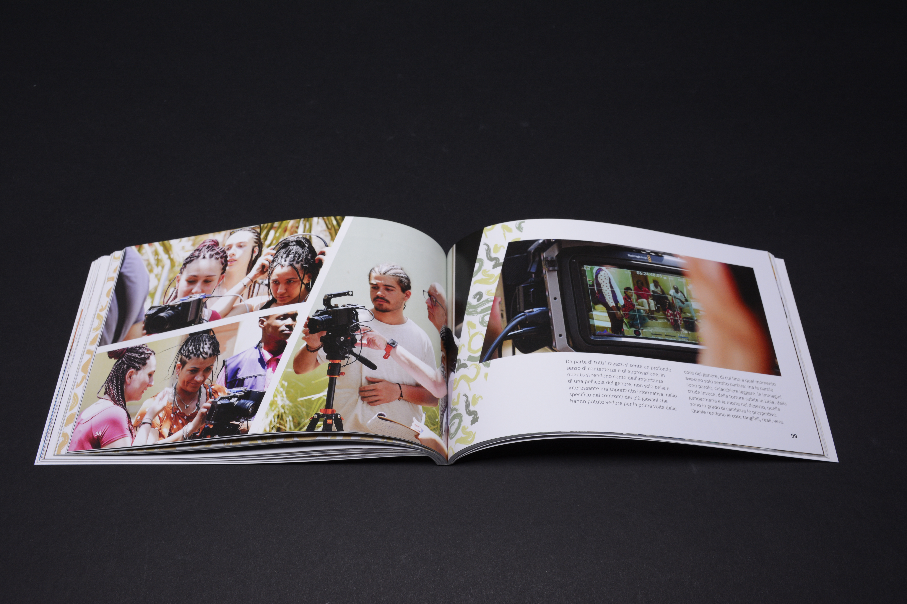
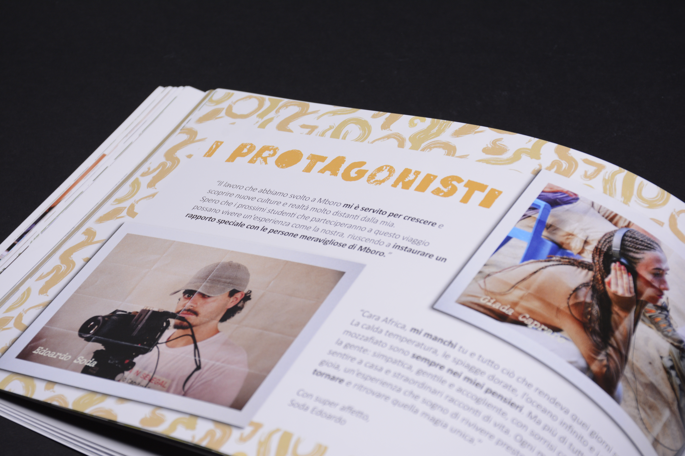
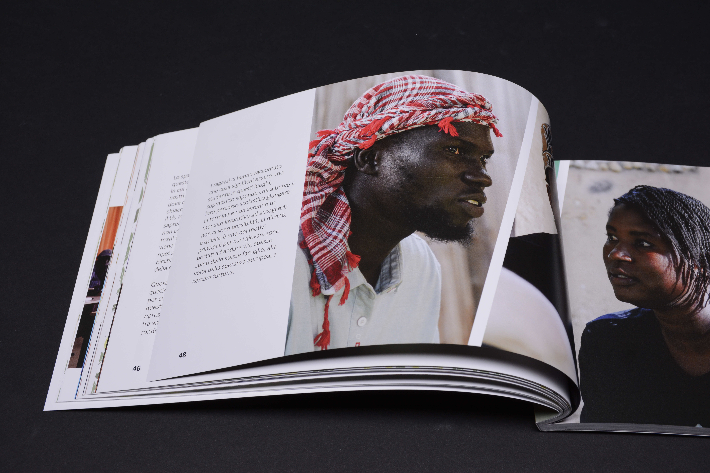

Diario di Carlotta
CONCEPT
The project takes the form of a photographical diary that recounts the human and educational experience of “the BoPa Institute of Turin in Senegal with Cinemovel” journey. I undertook this project independently, handling every aspect of the book’s creation, from writing to layout design, including the curation and editing of the images.
During this experience, the crew, made up of students and professors, accompanied Cinemovel’s caravan as it traveled across Senegal with the Oscar-winning film Io Capitano by Matteo Garrone. This editorial piece presents the entire experience through the eyes of someone who lived it firsthand, with the goal of sharing the story upon returning.
The book adopts a format that reflects Senegal’s colorful and slightly chaotic character. Many spreads abandon a strict grid in favor of a patchwork of images, creating a unified visual narrative, while chapters are organized by semantic themes and introduced with Wolof idioms and translations, reinforcing the cultural dimension of the project.
“How can you fit a life-changing
experience on paper?”







